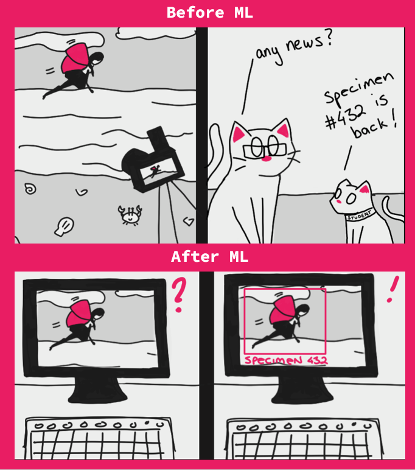
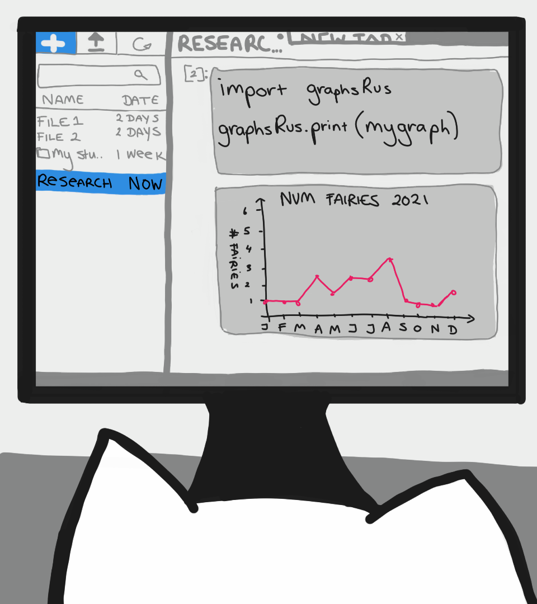
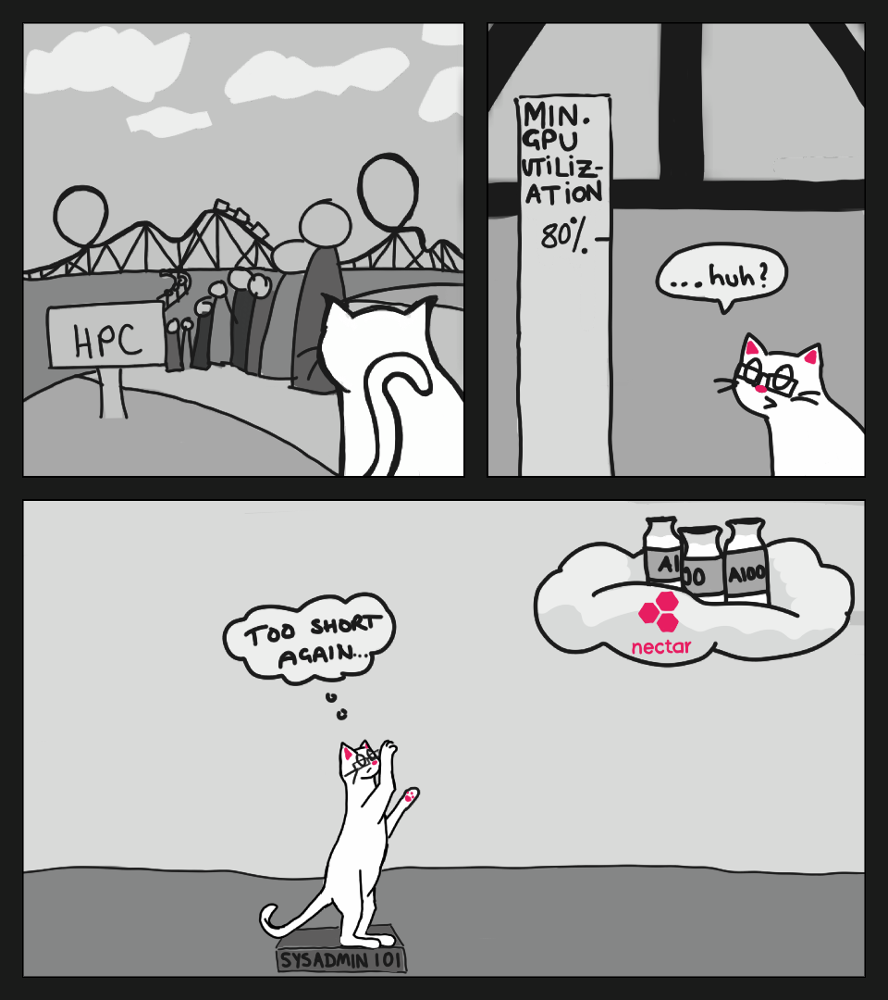
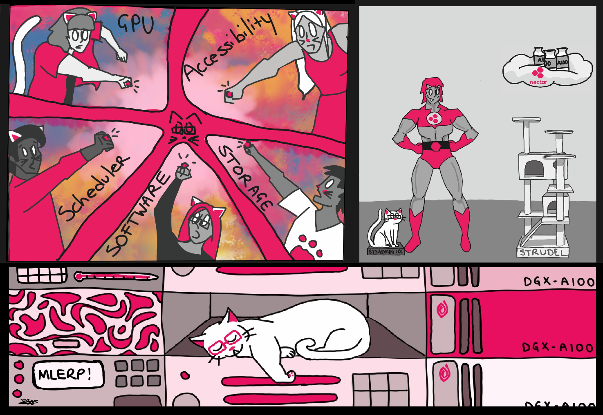

Machine Learning eResearch Platform (MLeRP)
What is MLeRP?
Featuring artwork by Kiowa Scott-Hurley
Say we have a researcher who is a domain expert in a field and is just discovering that machine learning algorithms might be appropriate to accelerate their work.

They explore online for potential approaches and even find some tutorials that use interactive environments, but quickly discover that dealing with large datasets requires more compute than their laptop can handle so they need to move to a HPC system.

While desktop sessions are available they might have prohibitively long queues and have low utilisation of the underlying hardware. They could submit a job to the HPC queue but this leads to long times between iterations. At this stage the researcher is still discovering things about their data, how to clean it and how to analyse it.

They need an interactive environment so they can develop and debug their algorithms and the algorithms, but still need access to high powered acceleration so they can process their dataset. At the same time we want to improve utilisation of the hardware so that we can serve more users and reduce wait times.
The MLeRP environment creates a middle ground that has the interactivity of a notebook with the power of a HPC environment that can share valuable resources between other users while code isn’t being executed.
We provide users with CPU based Jupyter notebook sessions capable of basic analysis, with the ability to interactively send jobs to a SLURM queue for GPU or parallelised CPU acceleration through Dask.

Now our new researcher can easily import the same code that they were using on their laptops or with online notebook services straight into a HPC environment without the need to convert it first into a SBATCH script, wait in long HPC queues or load modules for dependencies.
Am I eligible for this service?
MLeRP is available to all Australian and New Zealand academic researchers. MLeRP supports authentication through AAF and Google. Tuakiri authentication is planned but not yet implemented.
How do I sign up?
You can apply for an allocation here.
How do I access the compute?
Notebooks attached directly to reserved GPU compute for 10 GB instances are available through the ‘Tabby’ service. This is ideal for data exploration, data visualisation or beginners who are just starting with HPC. Larger instances, such as 20 GB and 40 GB are only available through the SLURM queue either using batch submission through the ‘Lion’ Service or through Dask SLURMClusters through the ‘Cheetah’ Service.
We expect new users to start their projects with notebooks using direct GPU reservation, then move to notebooks backed by Dask SLURMClusters when they need the extra power. Finally, once they have finished writing their applications and are ready to train their models, they can submit their experiments to the SLURM queue.
For more information about MLeRP’s regions and compute, have a read of this page.
What is the advantage of Dask SLURMClusters over direct GPU reservations?
Dask has the ability to offload individual python functions to another device, once complete the result is then passed back to the parent notebook. Any errors that occur during the process will be forwarded to the notebook just like running things locally, making things more intuitive to debug than a submitted script. This allows the user to write asynchronous code that doesn’t tie up the main computing device and only access it when needed, allowing the platform to serve more users at once. This adds an overhead to the process - the offloading doesn’t happen for free, but it does allow greater flexibility in how the code is written.
We believe that this approach of submitting jobs through a python notebook environment will feel more familiar to researchers familiar with the python data science ecosystem given how Dask is designed as a light wrapper around common libraries like numpy, pandas and Scikit-Learn. Rather than needing to rework your code into a high performing batch script as on a traditional HPC system, the scale of your SLURM job can be the size of a python function.
Some example use cases include:
- Using a GPU job to develop and debug your model and train function interactively, while not tying up the GPU resources when not executing code
- Using a short running GPU job to check the stability of your training functions, submitting each training epoch as a new job
- Using a separate GPU job to run your evaluation function concurrently with the next training epoch
- Using a larger number of low powered CPU jobs to preprocess your dataset by passing the individual samples as input, allowing your jobs to scale to the capacity of the cluster
For more information on offloading with Dask, have a read of this tutorial and have a look at Dask’s documentation.
How is this different from a Nectar GPU reservation or from Google Collab?
MLeRP is a HPC system. It has a permanent filesystem, letting you store your data and code base between experiments. This also enables collaboration between multiple researchers. If you would like to organise a shared project quota, please reach out.
This also allows us to maintain software environments for you to use and gives you the flexibility to maintain your own by installing things directly into your user directory. We provide a conda environment with many common data science packages that will allow you to get started right away, but we fully expect that users will at some point need to move on to maintaining their own conda install. User installed conda environments are fully compatible with our Jupyter Lab application provided they contain the necessary packages.